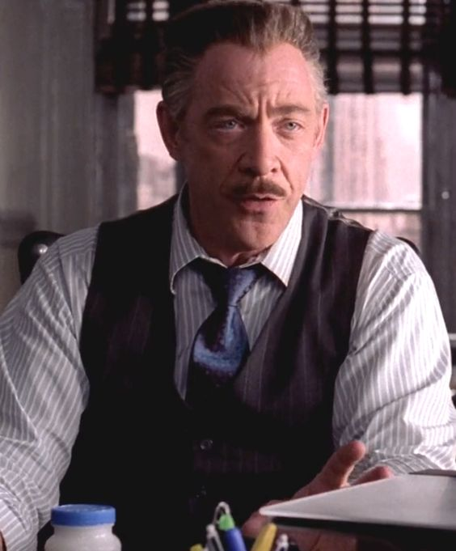

THE DAILY BUGLE
Nuestra Historia
Fundada en 1897 en las calles de Nueva York, el Daily Bugle fue un diario sensacionalista leído por los ciudadanos. Famoso por su sesgo de mano dura contra las hazañas de Spider-Man, la publicación constante superó a su rival The Globe diarios a de ser el periódico más leído del Universo Marvel.
En la década de 1930, Scoop Daly trabajaba para el Bugle, él y otros periodistas que trabajan para ella a menudo se involucró en el aventurero de las Noches de Raven. Un hombre llamado Jameson (a quien muchos aparentemente incorrecta presumir un pariente de J. Jonah Jameson) trabajó para el Bugle, una vez que casi la captura de una imagen de una máscara del Capitán América. Este hombre después sirvió como editor, dirigiendo C. Thomas Sitios. Se desempeñó como editor en 1945, cuando el Daily Bugle publicó una historia alegando, con razón a pesar de la negación oficial, que el Capitán América se había perdido en el mar.
El editor del Bugle, J. Jonah Jameson, comenzó su carrera periodística como reportero del Bugle, mientras que en la escuela secundaria. Jameson compró el Bugle forcejeo con el dinero obtenido de los bienes heredados, y se convirtió el papel en un éxito de público. Otras revistas publicadas de vez en cuando incluyen la revivió Ahora Magazine y la Revista de la Mujer ya desaparecido.
J. Jonah Jameson, Inc. compró el edificio de Goodman en la Calle 39 y Segunda Avenida en 1968 y se trasladó toda su editorial y publicación de las instalaciones allí. Ahora se llama el Daily Bugle construcción, el complejo de oficinas es de cuarenta y seis pisos de altura, y está coronada por el logotipo del Daily Bugle en la carta de 30 pies en el techo. Hay muelles de carga en la parte trasera del edificio, alcanzado por un callejón. Tres pisos están dedicados a la redacción del Daily Bugle, dos niveles de sub-sótano para las prensas de impresión, mientras que el resto de los pisos se alquilan.
El periódico se caracteriza por su sesgo anti-héroe, especialmente en relación con Spider-Man, a quien el papel constantemente como parte de su política editorial. Sin embargo, el editor en jefe, "Robbie" Robertson, el único subordinado a Jameson que no se siente intimidado por él, ha trabajado a moderada.
Debido a la disminución de la circulación, Jameson concedió a las objeciones de Robertson y ha creado una sección especial del periódico llamado "The Pulse", que se centró en los superhéroes. Además, el documento también se corrió de forma intermitente una revista llamada Now Magazine.
Los Nuevos Vengadores decidieron llegar a un acuerdo con Jameson sobre el contenido exclusivo a cambio de la eliminación de la vibración fuerte anti-Spider-Man en el periódico, a la que Jameson estuvo de acuerdo. Simplemente un día más tarde, Jameson ya se había ido a su palabra con Iron Man, con el título "un asesino quería (Lobezno), un supuesto ex-miembro de una organización terrorista (Spider-Woman) y un traficante de heroína condenados (Luke Cage) son sólo algunos de los nuevos reclutas conjunto de enterrar el nombre una vez bien de los Vengadores ". Esto hizo que Jessica Jones para vender las primeras imágenes de su bebé recién nacido a uno de los competidores en lugar de clarín.
J. Jonah Jameson
J. Jonah Jameson, hijo de un abusivo veterano de guerra, comenzó su carrera periodística como repartidor de papel, y luego como redactor del Daily Bugle, editado anteriormente por el anciano Jameson, quien algunos presumen haber sido su padre. Se convirtió en un reportero de Bugle a tiempo completo, incluido un período como corresponsal de guerra, criticando a los héroes más disfrazados de vigilantes que buscan la gloria en el escenario del hombre común. Al casarse con su novia de la escuela secundaria Joan, Jameson se convirtió en editor jefe y se hizo famoso por apoyar los derechos civiles y oponerse al crimen organizado. Cuando los herederos de Goodman pusieron el Daily Bugle a la venta, Jameson utilizó su último dólar e hizo suyo el periódico. Trabajó arduamente para apoyar a su esposa y a su hijo John, y eventualmente se convirtió en un miembro millonario del Century Club de élite de Nueva York; aunque se ganó una reputación como un avaro notorio, apoyó a muchas organizaciones benéficas y, a menudo, ayudó a los empleados que realmente lo necesitaba
